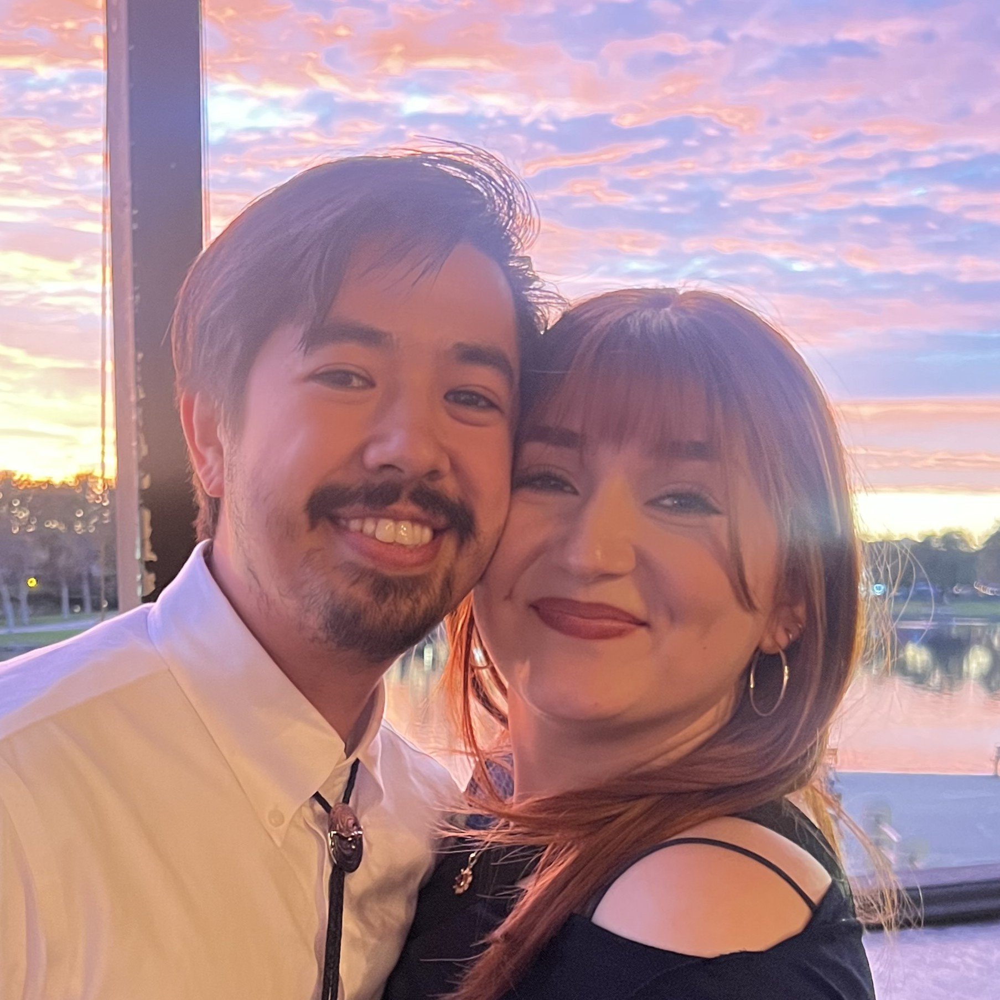
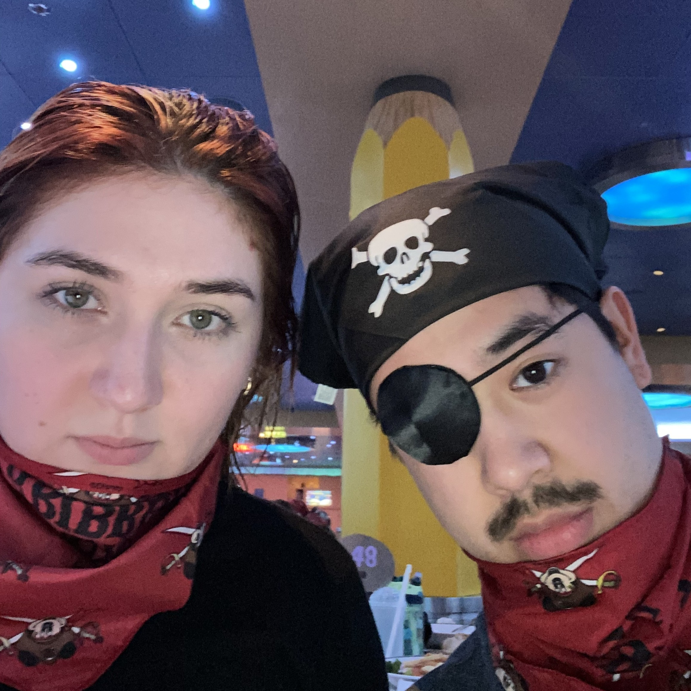
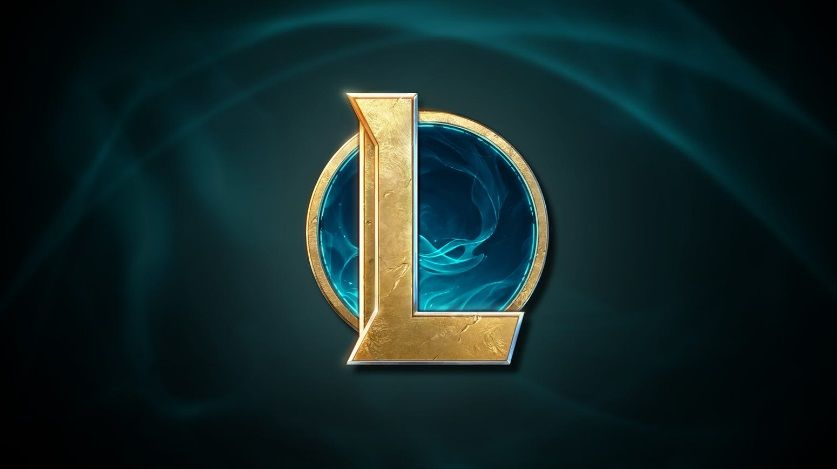
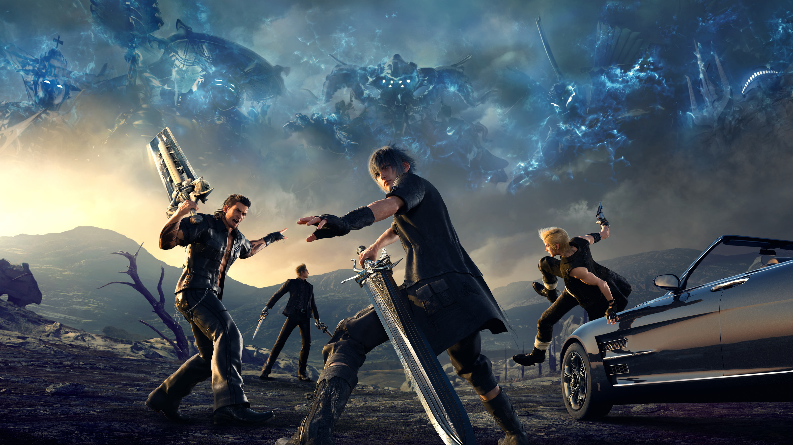
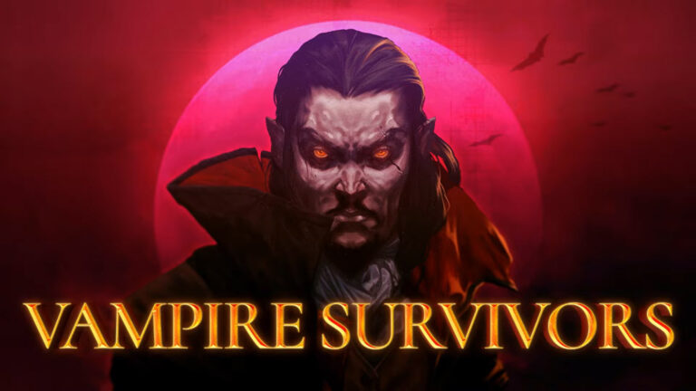

Timeline
--1997--
I was born Kyle Michaels on April 24th, 1997 to parents Janet and Mike Michaels at Mission Viejo hospital. Not really much else happened that year so instead I'll use this section to show you some current pictures of me and my lovely partner Alyssa :)


--2011--
Big time skip here but the next key moment in my life was when my mom took a job in New York City. Now, I have no idea where you, dear reader, currently reside. However, my entire life was in Mission Viejo which is basically a million miles away from New York. In the summer of 2011 both my parents moved to New York and left 14 year old me and my 16 year old sister behind. Obviously they'd come back from time to time but for the most part I was left to my own devices. You may be thinking... What does a 14-year-old do when there's no parental supervision? Drugs? No. I played tons of video games. This burgeoning addition to gaming came with some pros and cons so lets focus on the positives for now. I discovered the art of interactive story telling! I also was able to re-connect with some elementary school friends via skype calls while playing Minecraft or League of Legends. I was having the time of my life but I also didn't do any homework... yikes. Obviously my grades did suffer. :(
--2015 & 2016--
I graduated High School and started attending Saddleback Community College. I was then kicked out of Saddleback because my GPA was in the gutter. Apparently 0.76 GPA by my third semester doesn't count as sufficient academic progress? Go figure. In all honesty I was just a dumb kid with no real concept of repercussions (remember absent parents). At this point I was forced to make a decision: continue working my dead-end cashier job (10c raises every 1000hrs worked. I know, crazy); or I could try something else. At the time I was saving up to buy a car. In reality at this point this was my second attempt at saving for a car. During my first attempt to save I blew the money on a month long backpacking trip though Europe with a few of my friends. That's a story for a different time. Anyways I was saving for a car. I figured if I was going to own a car I might as well know how to fix it so I could save some money. Obviously I was watching a bunch of youtube videos on how to fix cars and since the omnipresent being known as GOOGLE is always watching, I started getting fed advertisements for an automotive trade school called UTI. (lol) I figured I'd give working on cars a shot so I signed up for a tour and let them know I was interested. With approval from my parents I signed up to go to UTI (lol) at the beginning of 2017.
--2017--
Since I'm assuming you already read the previous box... I'm not going to repeat myself here. This was my busiest year (so far). I had work from 6:00 AM to 2:00 PM Wednesday through Sunday and car school from 6:45 PM to 11:45 PM on weekdays. That meant I had no days without obligations. Obviously my video game addiction suffered. On top of that UTI (lol) was in Long Beach. Now you may be thinking "Oh Kyle that's not so bad it's only a 45 minute drive from Mission Viejo". No. I wish that was the case but it wasn't. I would leave my house at 3:30 PM and get to the UTI (lol) campus around 6:30 PM every time. It was crazy. Suddenly I had no time for any traditional hobbies but I had a huge chunk in the middle of the day. What did I fill this time with? Audiobooks. Loads and loads of audiobooks. During one of these soul-crushing drives I discovered my all time favorite book series called "The Name Of The Wind" by Pathrick Rothfuss, more about that later. My time at car school was exhausting yet rewarding. I learned that I can actually do well in school if I just care about the subject or have an end goal. I realized I did poorly at saddleback because I had no clue what I wanted to do in the future. With this knowledge safely tucked away in my brain I excelled. About halfway through the year I learned about UTI's (lol) manufacturer training programs. These were programs that you would apply to to be trained by a specific car brand after graduation. To be completely honest I had never cared about cars my entire life. I believed blinker fluid was a real thing and didn't see the point of a tire rotation because they rotate when you drive. Knowing this about me, I'm sure you can understand why I applied to the Porsche program. It was the most expensive car brand... obviously. When going through the interview process for Porsche I leared that you actually needed some job experience working on cars to be able to get into the program. The next day I put in my two weeks at Ralph's and started searching around for work at a tire shop. I was kind of hoping to not find a job for a bit because I was exhausted, but I ended up finding a lube tech position almost instantly. No break for me :(. The school year continued and I made it to the top 12 candidates nation-wide for the Porsche program but unfortunately did not make the cut. At this point I had 2 weeks left before I graduated and didn't have any other prospects. Hubris I guess. I thought I was going to get in. At the last moment I applied for the BMW program. Because I like BMWs? Because I learned how to drive on my dads old 5 series> (E39 if you know or care). No, it's because it was the second most expensive car brand... obviously. So I was all set, I graduated with a 4.0 and 97.5% attendance record. Not to brag but I had the best grades in my graduating class and was asked to speak at graduation. (I said no because anxiety). Also I was robbed with my attendance record. I fell asleep in my car in the parking lot and was late to class by 2 minutes.
--2018--
Off to BMW school! I didn't mention this in the previous entry but BMW school was in New Jersey... in the dead of winter... uh-oh. (Technically still in 2017 but I won't tell anyone if you don't). This was an interesting conundrum for me. I couldn't stay in New York with my parents because that was too far from school. The school didn't have housing either. I thought my only option was to look on craigs-list for housing but it turns out I have a godmother living in Jersey. So that's housing sorted, now transport. I ended up shipping my car over there because uber every day would have been too expensive and driving across the country probably would have driven me crazy. Finally, to deal with the winter, I couldn't do anything about it. I was so cold all the time and ran so many red lights because I couldn't stop in the snow. How embarrassing. Somehow I made it though BMW school without dying of hypothermia or crashing my car. Woohoo! I got a job at Irvine BMW the week after I returned from Jersey and started my career as a BMW Technician in 2019.
--2019 to Present--
I've been working at Irvine BMW for the past 5 years. In that time I went to more BMW training and eventually became a Master Technician. Unfortunately I think working on cars for a living isn't for me. A bit late to realize huh. Turns out I don't like being required to do manual labor in a non-climate controlled environment. There are a bunch of other factors why I want to change careers but those are irrelevant. The point is, I've found what I actually want to do... I think. In the past few years I decided to seriously pursue shifting careers. I decided on software engineering since it runs in the family and it usually takes place in a climate controlled environment. I started down this path by signing up for Harvard's online CS50 class through edX. It was free and online so I figured I'd give it a shot. I completed that program in about 6 months and learned that coding isn't just witchcraft like I thought it was. After that I signed up for a full on coding bootcamp with CareerFoundry. Through that bootcamp I learned the ins and outs for front and back end development as well as a little bit of cloud computing. After completing this bootcamp I started applying to jobs thinking I'd find a job easily. Turns out nobody hires bootcamp kids. Sad. I sent out over 1000 applications and did not receive a single interview. I am not exaggerating. I kept every rejection email in a folder. When that folder hit 1000 I gave up. Now I'm here :). Hopefully I can get a coding job after college. Anyways, all of that was depressing. Below are some of my interests. If you hover over the image it'll show you the title. If you click on the images it'll pull up a little box with the picture and what I've got to say about the thing. Feel free to take your time and explore :)
Interests
| Games | ||
|---|---|---|
 Kingdom Hearts Kingdom Hearts |
 League of Legends |
 Final Fantasy XV |
 Dark Souls 1 Dark Souls 1 |
 Nier Automata Nier Automata |
 Dark Souls 3 Dark Souls 3 |
 Persona 5 Royal Persona 5 Royal |
 Super Smash Bros. Ultimate Super Smash Bros. Ultimate |
 Vampire Survivors |
| Anime | ||
|---|---|---|
 Neon Genesis Evangelion Neon Genesis Evangelion |
 Jojo's Bizarre Adventure Jojo's Bizarre Adventure |
 Death Note Death Note |
| Books | ||
 Name of the Wind Name of the Wind |
 The Way of Kings The Way of Kings |
 The Stand The Stand |